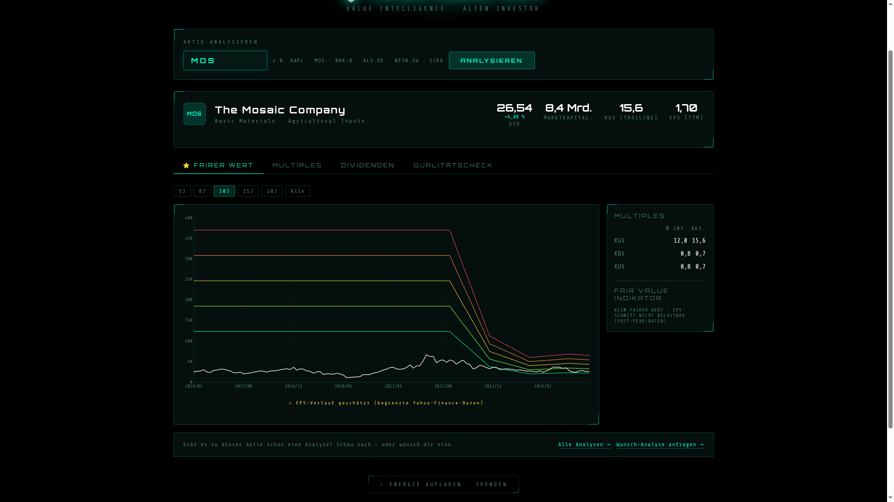
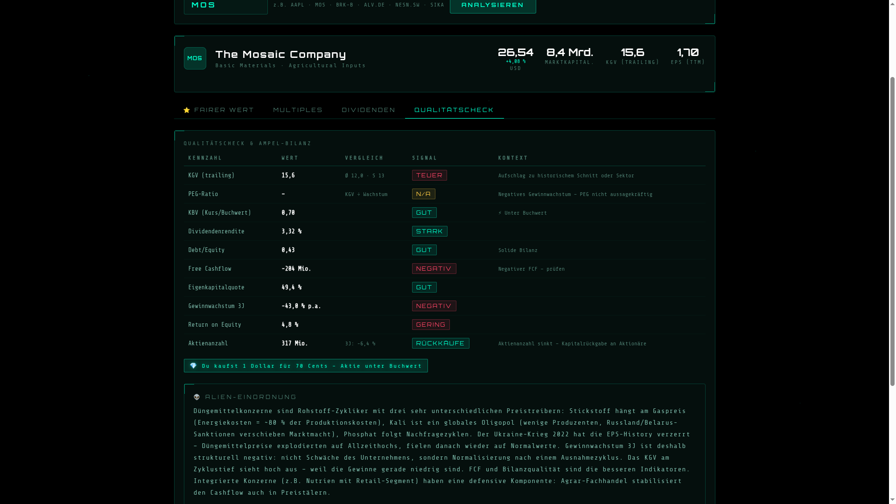
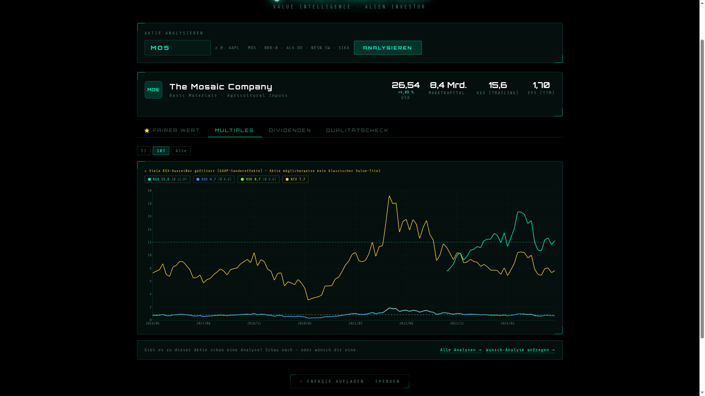
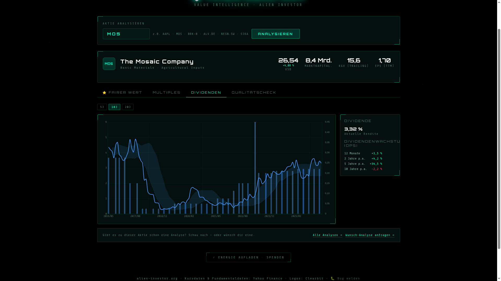

Ohne Phosphat und Kali kein Getreide. Ohne Getreide keine 8 Milliarden Menschen. The Mosaic Company sitzt an einem der wenigen echten geologischen Engpässe der modernen Ernährungskette — und wird trotzdem unter Buchwert gehandelt. Die Frage ist nicht ob das billig ist, sondern warum.
„Mosaic verkauft das Fundament der Landwirtschaft. Kein Dünger — kein Essen. Das ist kein Hype, das ist Chemie." 👽
1) Kurzüberblick
| Kennzahl | Wert |
|---|---|
| Ticker | MOS (NYSE) |
| Kurs (April 2026) | 26,54 USD |
| Marktkapitalisierung | 8,4 Mrd. USD |
| KGV (trailing) | 15,6× |
| EPS (TTM) | 1,70 USD |
| KBV | 0,70 — unter Buchwert |
| Dividendenrendite | 3,32 % |
| Sektor | Basic Materials / Agricultural Inputs |
Mosaic ist der weltgrößte integrierte Phosphatproduzent und einer der vier größten Kaliproduzenten der Welt. Das Unternehmen versorgt globale Landwirtschaft mit den zwei Nährstoffen, die kein moderner Anbau ersetzen kann — und kontrolliert die Wertschöpfungskette von der Mine bis zum Schiff.
2) Geschäftsmodell & Segmente
Drei Segmente, eine Logik: Rohstoffe aus dem Boden ziehen, veredeln, zum Farmer liefern.
- Phosphates — Abbau in Zentralflorida (einer der wenigen wirtschaftlichen Phosphat-Lagerstätten in der westlichen Hemisphäre), Verarbeitung zu DAP, MAP und dem Premiumprodukt MicroEssentials®. MicroEssentials ist ammoniakversetzt und langsamer freisetzend als Standardware — höhere Marge, weniger Rohstoffabhängigkeit.
- Potash — Kaliabbau in Saskatchewan (Kanada). Einer der kostengünstigsten Produktionsstandorte weltweit. Saskatchewan ist geologisches Glück: großflächig, tief, hochgradig.
- Mosaic Fertilizantes — Produktion und Vertrieb in Brasilien, dem weltgrößten Agrarimportmarkt. Direktzugang zu brasilianischen Farmern über ein eigenes Vertriebsnetz.
Die vollständige Wertschöpfungskette: Eigene Minen → eigene Verarbeitungsanlagen in Florida, Louisiana und Brasilien → eigene Logistik per Schiene, Binnenschiff und Hochseefrachter. Kein externer Abhängigkeitspunkt, kein Zwischenhändler.
Der Burggraben: Phosphat-Minen in Florida entstehen nicht auf Bestellung. Der Bau einer neuen Mine kostet Milliarden und dauert 10–15 Jahre. Das Ressourcen-Eigentum ist der Moat — kein Patent, kein Netzwerkeffekt, sondern Geologie. OCP (Marokko, staatlich) ist der einzige Player, der strukturell Druck auf Mosaics Phosphat-Geschäft ausüben kann — dazu mehr unter Risiken.
3) Wachstum & Entwicklung
| Jahr | Umsatz | EPS | Op. Marge |
|---|---|---|---|
| 2021 | 12,4 Mrd. USD | 4,27 USD | 20,0 % |
| 2022 ▲ Peak | 19,1 Mrd. USD | 10,06 USD | 25,0 % |
| 2023 | 13,7 Mrd. USD | 3,50 USD | 9,8 % |
| 2024 ▼ Tief | 11,1 Mrd. USD | 0,55 USD | 5,6 % |
| 2025 | 12,1 Mrd. USD | 1,70 USD | 6,8 % |
Warum der Einbruch nach 2022? Der Ukraine-Krieg hat Russland und Belarus als Düngemittelexporteure temporär ausgehebelt. Kali, Phosphat und Stickstoff stiegen gleichzeitig auf Rekordpreise. Mosaic verdiente 2022 zehnmal mehr pro Aktie als heute. 2023–2025 folgte die Normalisierung. Das Gewinnwachstum von -43 % p.a. über 3 Jahre ist kein Zeichen struktureller Schwäche — es ist Zyklusnormalisierung nach einem historischen Ausnahmejahr.
Das ist die zentrale Lesart für alles was folgt: Alle Kennzahlen, die auf Gewinn basieren, sind am Zyklustief optisch verzerrt.

Alien Analyzer V2 — Fairer Wert Tab: Der EPS-Ausschlag 2022 verzerrt den historischen Schnitt so stark, dass kein belastbarer fairer Wert berechenbar ist. Das Tool zeigt das transparent. ↗ Zum Vergrößern klicken
4) Profitabilität & Bilanz

Alien Analyzer V2 — Qualitätscheck: Ampelübersicht der wichtigsten Kennzahlen mit Kontext-Einordnung. ↗ Zum Vergrößern klicken
Das Ampelbild sieht gemischt aus — und das ist erklärbar. KBV (0,70), Debt/Equity und Eigenkapitalquote zeigen eine solide Bilanzsubstanz. Die roten Signale — negativer FCF, negatives Gewinnwachstum, niedriger ROE — sind alle dasselbe in anderen Worten: Das Unternehmen ist gerade am Zyklustief. Ein 2022er-ROE von 25 %+ sieht in diesem Bild nicht auf.
Das KGV von 15,6 als „TEUER" zu markieren, während die Aktie unter Buchwert notiert, ist der klassische Zykliker-Widerspruch: KGV hoch weil Gewinne gedrückt, KBV tief weil Assets real und stabil.
Zur Dividende: 0,88 USD/Jahr (0,22 USD/Quartal), Rendite 3,32 %, Ausschüttungsquote ca. 52 %. Das Management hält die Dividende, obwohl der FCF sie aktuell nicht vollständig deckt. Das ist eine Wette auf baldige Normalisierung — kein unbegrenztes Versprechen.
5) Strategische Themen
Premiumprodukte: MicroEssentials®, das ammoniakhaltige Premiumdünger-Segment, macht Mosaic unabhängiger vom reinen Rohstoff-Preis. Wer ein besseres Produkt verkauft, muss nicht nur auf Marktpreise warten.
Portfolio-Disziplin: Mosaic hat Mosaic Potash Carlsbad verkauft (weniger strategisch) und drosselt Produktion in Brasilien bei zu hohen Schwefelpreisen. Das Management agiert nicht stur — es passt Kapazitäten ans Preisniveau an.
Seltene Erden — die unterschätzte Wildcard: Das Uberaba-Projekt in Brasilien, entwickelt gemeinsam mit Rainbow Rare Earths, extrahiert wirtschaftlich nutzbare Seltene-Erden-Vorkommen aus Phosphat-Rückständen. Dieser Wert ist im aktuellen Kurs nicht eingepreist. Es ist Optionalität — kein Versprechen, aber ein echter Aufwärtsfaktor.
Ausblick (Analystenprognosen): EPS 2026E: 1,88 USD (+11 %) | EPS 2027E: 2,43 USD (+29 %) | Umsatz 2026E: 12,84 Mrd. USD (+6,5 %). Keine Raketenmission, aber eine kontrollierte Erholung.
6) Bewertung im Kontext

Alien Analyzer V2 — Multiples Tab: KGV (15,6), KBV (0,7), KUV (0,7), KCV (7,7) im 10-Jahres-Vergleich. Der Analyzer warnt: Viele KGV-Ausreißer gefiltert (GAAP-Sondereffekte). ↗ Zum Vergrößern klicken
Das KGV liegt über dem historischen Schnitt — obwohl der Kurs niedrig ist. Das ist der Zykliker-Paradox: Niedrige Gewinne machen das KGV optisch teuer. KBV (0,70) und KUV (0,70) zeigen das Gegenteil: Man kauft 1 Dollar Substanz für 70 Cent.
Besserer Anker als EPS-Multiples: Normalisiertes EPS bei ~2,00–2,50 USD (Analysten-Konsens 2027E: 2,43 USD) × historisches KGV von 12 ergibt einen fairen Wert von 24–30 USD. Aktueller Kurs 26,54 USD — mitten in der Range. Nicht billig, nicht teuer. Fair, am Boden des Zyklus.
Tool-Tipp
Die Kennzahlen in dieser Analyse stammen aus dem Alien Analyzer V2 — dem eigenen Screening-Tool für Aktien. Fairer Wert, Multiples, Dividenden und Qualitätscheck auf einen Blick. Kostenlos, kein Login, kein Abo.
alien-investor.org/alien-analyzer — Ticker eingeben, analysieren.
7) Wettbewerbsumfeld & Moat
| Unternehmen | Fokus | Marktkapital | Besonderheit |
|---|---|---|---|
| Mosaic (MOS) | Phosphat + Kali | 8,4 Mrd. | Größter integrierter Phosphatproduzent |
| Nutrien (NTR) | Phosphat + Kali + Retail | ~34 Mrd. | Retail-Segment stabilisiert Cashflow |
| ICL Group (ICL) | Kali + Spezialdünger | ~6,7 Mrd. | Israel, Spezialdünger-Fokus |
| OCP Group | Phosphat (staatlich) | nicht börsennotiert | Marokko, aggressiver Kapazitätsausbau |
| Yara International | Stickstoff | ~8 Mrd. | Europäisch, Gaspreis-abhängig |
Mosaic vs. Nutrien: Nutrien hat ein Retail-Agrarhandel-Segment, das den Cashflow auch im Preistief stabilisiert. Das fehlt Mosaic. Dafür ist Mosaic die reinere Wette auf Phosphat-Preise — mit günstigerer Bewertung. Wer einen Puffer will: Nutrien. Wer den direkteren Zyklusplay will: Mosaic.
OCP-Risiko: Der staatliche marokkanische Phosphat-Gigant baut aggressiv Kapazitäten aus und drückt global die Phosphatpreise. Das ist strukturell das größte Wettbewerbsrisiko für Mosaics Phosphat-Segment. [SCHÄTZUNG — nicht aus Quellen verifiziert]
Geopolitischer Schutz: Russland und Belarus sind durch Sanktionen als Kali-Exporteure eingeschränkt. Das reduziert das globale Angebot und stärkt die Preissetzungsmacht westlicher Produzenten wie Mosaic in Saskatchewan.
8) Kundenperspektive
Mosaics Kunden sind keine Endverbraucher. Es sind Agrarhändler, Kooperativen und direkte Großfarmer — vor allem in Nordamerika und Brasilien. In Brasilien direkter Farmerkontakt über das Mosaic Fertilizantes Vertriebsnetz.
Öffentliche B2B-Kundenbewertungen existieren für dieses Segment nicht. Die Kundenbindung entsteht über Versorgungssicherheit und Premiumprodukte (MicroEssentials) — nicht über Markentreue. [NICHT VERFÜGBAR]
9) Mitarbeiterperspektive
Mosaic beschäftigt rund 15.000 Mitarbeiter weltweit in Bergbau, Verarbeitung und Logistik. Das Unternehmen veröffentlicht einen jährlichen Sustainability Report. Bergbau ist kapitalintensiv und physisch anspruchsvoll — kein Tech-Konzern-Ambiente, aber global einer der stabileren Arbeitgeber im Rohstoffsektor. [NICHT VERFÜGBAR — keine öffentlichen Arbeitgeberbewertungen auswertbar]
10) Chancen & Risiken
11) Alien-Fazit

Alien Analyzer V2 — Dividenden Tab: 3,32 % Rendite, +34,5 % Dividendenwachstum p.a. über 5 Jahre — nach dem tiefen Einschnitt 2020/2021. ↗ Zum Vergrößern klicken
Mosaic ist ein Rohstoff-Zykliker mit einer Weltmarktführerposition, die man nicht einfach nachbaut. Der Burggraben liegt in der Geologie — nicht in Patenten, Marken oder Netzwerkeffekten. Wer die Minen nicht hat, kann nicht mitspielen.
Die Zahlen sehen am Zyklustief hässlich aus. Das ist der Punkt. KBV 0,70 bedeutet: Man kauft 1 Dollar echte Substanz (Minen, Anlagen, Lagerbestände) für 70 Cent. Das war auch bei anderen Zyklikern an Tiefs die bessere Einstiegsmöglichkeit — nicht wenn die Gewinne auf dem Höhepunkt sprudelten.
Die eigentliche Frage ist wann sich die Düngemittelpreise normalisieren — nicht ob. Mehr Menschen brauchen mehr Essen. Mehr Essen braucht mehr Dünger. Das ist kein Trend, das ist Arithmetik. Ein Gegenargument bleibt OCP: Marokkos staatlicher Phosphatgigant baut Kapazitäten aggressiv aus und könnte strukturell Druck auf Preise ausüben.
Wer Mosaic kauft, wettet nicht auf ein Wachstumsunternehmen. Man kauft reale Assets unter Buchwert, eine 3,3 % Dividende als Geduldsgehalt, und eine Gratisoption auf den nächsten Preiszyklus.
„Du kaufst 1 Dollar für 70 Cent — und bekommst dafür bezahlt zu warten." 👽